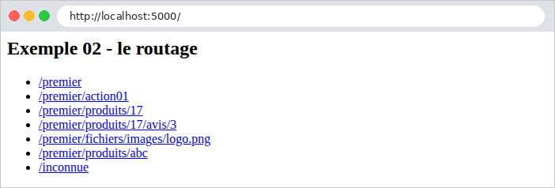
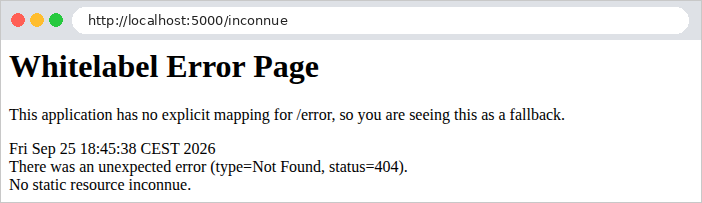
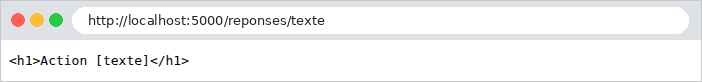
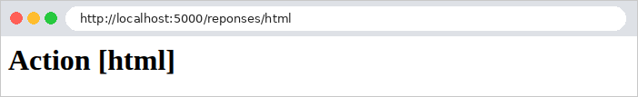

2. Contrôleurs, actions, routage
Ce chapitre étudie le chemin d'une requête, du navigateur jusqu'à l'action qui la traite, et la réponse que renvoie cette action. Les vues n'apparaîtront qu'au chapitre 4 : ici, les actions renvoient directement du texte ou du JSON.
2.1. Exemple 01 : la structure d'une application Spring MVC
Le premier exemple est la plus petite application [Spring MVC] possible. Outre les fichiers [pom.xml] et [application.properties] présentés en introduction, elle a deux fichiers :
2.1.1. Le point d'entrée : Exemple01Application.java
Commentons ce code :
- ligne 1 : le package de la classe. Il doit correspondre au dossier du fichier ([src/main/java/exemple01]) ;
- lignes 3-4 : les classes d'autres packages utilisées par ce fichier. Contrairement à [C#], [Java] n'a pas d'importations implicites (hormis le package [java.lang], qui contient [String], [Integer]...) : chaque fichier importe explicitement les classes dont il se sert ;
- ligne 9 : [@SpringBootApplication] est une annotation. Une annotation [Java] s'écrit [@Nom], juste avant ce qu'elle décrit (une classe, une méthode, un paramètre...) : elle ajoute une information que le framework lit au démarrage. C'est l'équivalent des attributs [[...]] de [C#]. [@SpringBootApplication] marque la classe de démarrage de l'application, et regroupe trois annotations : [@Configuration] (la classe peut déclarer des objets gérés par [Spring], cf. exemple 06), [@EnableAutoConfiguration] (l'auto-configuration : [Spring Boot] configure lui-même tout ce que permettent les bibliothèques présentes, ici [Spring MVC], [Tomcat] et [Jackson]) et [@ComponentScan] (le balayage des composants : [Spring] cherche les classes annotées [@Controller], [@Service]... dans le package de cette classe, [exemple01], et dans tous ses sous-packages, comme [exemple01.controllers]) ;
- ligne 13 : la méthode [main], point d'entrée de tout programme [Java]. Elle est [public] (visible de partout) et [static] (elle appartient à la classe, et non à un objet de la classe). Le paramètre [args] contient les arguments de la ligne de commande ;
- ligne 16 : [SpringApplication.run] démarre [Spring] : lecture de la configuration (le fichier [application.properties], les variables d'environnement, les arguments de la ligne de commande...), création des objets de l'application, puis démarrage du serveur web [Tomcat], qui attend les requêtes jusqu'à ce qu'on arrête l'application ([Ctrl-C]). [Exemple01Application.class] désigne la classe elle-même : [Spring] y lit l'annotation [@SpringBootApplication], et en déduit le package à balayer.
Il n'y a rien d'autre à écrire : pas de liste des contrôleurs, pas de déclaration des routes. Le balayage des composants trouve les contrôleurs, et l'auto-configuration met en place tout le reste.
2.1.2. Le contrôleur : controllers/AccueilController.java
- ligne 1 : la classe est dans le package [exemple01.controllers], un sous-package de [exemple01] : le balayage des composants la trouve ;
- ligne 8 : l'annotation [@Controller] fait de la classe un contrôleur de [Spring MVC]. La classe n'a pas à hériter d'une classe du framework (c'est une différence avec [ASP.NET Core MVC]) ; par convention, son nom se termine par [Controller]. [Spring] crée lui-même l'objet contrôleur au démarrage ;
- ligne 12 : l'annotation [@GetMapping("/")] associe la méthode [index] aux requêtes [GET /]. Une méthode ainsi associée à une route est une action ;
- ligne 14 : l'annotation [@ResponseBody] indique que la valeur rendue par l'action est le corps de la réponse envoyée au navigateur. Sans elle, [Spring MVC] prendrait la chaîne rendue pour le nom d'une vue à afficher (nous le verrons à l'exemple 04, puis au chapitre 4) ;
- lignes 15-16 : l'action rend une chaîne de caractères. Par convention, les noms de méthodes [Java] commencent par une minuscule.
2.1.3. Exécution
Dans un terminal ouvert sur le dossier [01-structure], on tape [../mvnw spring-boot:run] ([..\mvnw spring-boot:run] sous [Windows]). Après la compilation, [Spring Boot] affiche sa bannière, puis ses messages de démarrage (nous remplaçons par [...] la date, l'heure, le numéro du processus et le nom du thread, et abrégeons les chemins) :
Les messages de démarrage indiquent la version de [Java], le port d'écoute (5000, fixé par [application.properties]) et la version du serveur [Tomcat], embarqué dans l'application. Ils indiquent aussi le profil actif : [default]. Un profil est un ensemble de réglages (développement, production...) ; l'étude de cas en utilisera un. Demandons l'URL [http://localhost:5000/] avec un navigateur :
puis avec [curl]. L'option [-i] affiche aussi les entêtes HTTP de la réponse (nous n'en gardons ici que quelques-uns) :
La première ligne de la réponse est le code de statut, 200, sans le texte habituel [OK] : [Tomcat] ne l'envoie pas, car le protocole HTTP ne l'exige pas. Le navigateur et [curl] se contentent du code.
[curl] a reçu la chaîne avec l'entête [Content-Type: text/plain] : du texte brut. Pourtant, le navigateur l'a affichée comme du HTML (on le devine à la police de caractères, celle des pages HTML). C'est que, pour une chaîne rendue par une action sans autre indication, [Spring MVC] choisit le type de la réponse d'après l'entête [Accept] de la requête, par lequel le client indique les types qu'il accepte : c'est la négociation de contenu. [curl] envoie [Accept: */*] (tous les types) et reçoit du [text/plain] ; un navigateur envoie [Accept: text/html,...] et reçoit du [text/html]. Vérifions-le en envoyant avec [curl] l'entête d'un navigateur (option [-H]) :
C'est une différence avec [ASP.NET Core MVC], qui envoyait toujours une chaîne comme du texte brut. L'exemple 02 montrera comment imposer le type de la réponse.
À la première requête, la console affiche encore trois lignes :
Le [DispatcherServlet] est le point d'entrée de [Spring MVC] (cf. le schéma de l'introduction) : [Tomcat] lui transmet toutes les requêtes, et c'est lui qui choisit l'action chargée de chacune. [Tomcat] ne le prépare qu'au moment de la première requête.
2.2. Exemple 02 : le routage
Le routage associe une URL et une méthode HTTP (GET, POST...) à une action. L'exemple 02 a deux contrôleurs :
La classe [Exemple02Application] est identique, au nom près, à celle de l'exemple 01 : c'est le cas de tous les exemples. Le fichier [controllers/AccueilController.java] :
- ligne 8 : [@RestController] réunit [@Controller] et [@ResponseBody] : toutes les actions de la classe rendent directement le corps de la réponse. C'est la forme la plus courante pour un contrôleur qui ne fabrique pas de vues ; nous l'utiliserons jusqu'au chapitre 4 ;
- ligne 13 : une annotation peut avoir plusieurs attributs, écrits [nom = valeur]. [value] est le chemin de la route (quand il est seul, on peut omettre [value =], comme à l'exemple 01) ; [produces] fixe le type de la réponse (l'entête [Content-Type]), ici [text/html], quel que soit l'entête [Accept] de la requête. [MediaType.TEXT_HTML_VALUE] est une constante qui vaut ["text/html"] : une faute de frappe dans son nom serait une erreur de compilation, ce qui n'est pas le cas d'une chaîne écrite à la main ;
- lignes 15-26 : un bloc de texte ([text block], [Java] 15), délimité par trois guillemets. Il peut s'étendre sur plusieurs lignes et contenir des guillemets sans les échapper. L'indentation commune à toutes ses lignes (y compris celle du ["""] fermant) est retirée.
L'action [index] renvoie ainsi une page HTML qui contient des liens vers les actions de l'autre contrôleur :

Le fichier [controllers/PremierController.java] :
Commentons ce code :
- lignes 10-11 : l'annotation [@RequestMapping("/premier")], posée sur la classe, fixe le préfixe commun à toutes les routes du contrôleur : ses actions traitent des URL qui commencent par [/premier] ;
- lignes 15-16 : [@GetMapping("")] : l'action [index] traite [GET /premier]. L'URL d'une action est la concaténation du préfixe du contrôleur et du chemin de l'action ;
- lignes 21-22 : l'action [action01] traite [GET /premier/action01] ;
- lignes 27-28 : le même chemin, mais pour la méthode POST : [@PostMapping] remplace [@GetMapping]. Il existe aussi [@PutMapping], [@DeleteMapping], [@PatchMapping]... (et [@RequestMapping], posée sur une méthode, accepte toutes les méthodes HTTP). Le nom de la méthode [Java] ([action01Post]) est libre : seules les annotations comptent pour le routage. Dans une même classe, deux méthodes ne peuvent d'ailleurs pas porter le même nom avec les mêmes paramètres ;
- lignes 33-34 : [{id}] est une variable de chemin : ce segment de l'URL peut prendre plusieurs valeurs. [\d+] est une expression régulière : le segment doit être formé d'un ou plusieurs chiffres, sinon la route ne correspond pas. Dans une chaîne [Java], le caractère [\] s'écrit [\\] : d'où [{id:\\d+}]. L'annotation [@PathVariable] demande à [Spring MVC] de passer la valeur du segment au paramètre de même nom de l'action, [id], après l'avoir convertie en [int] : pour [/premier/produits/17], [id] vaut le nombre 17. C'est la liaison de données ([data binding]), que le chapitre suivant étudiera en détail. Pour que [Spring] connaisse le nom des paramètres, le compilateur doit le conserver dans les classes compilées (option [-parameters]) : [spring-boot-starter-parent] s'en charge ;
- ligne 35 : l'opérateur [+] concatène une chaîne et un nombre ;
- lignes 39-41 : deux variables de chemin, passées à deux paramètres de l'action. La méthode [formatted] remplace chaque [%d] du texte par un nombre entier, dans l'ordre des arguments ;
- lignes 45-47 : [{*chemin}] est une variable « attrape-tout » ([catch-all]) : elle accepte n'importe quelle fin d'URL, y compris des [/]. Sa valeur commence par un [/].
Voici les réponses à quelques requêtes :
Pour envoyer une requête POST, on utilise l'option [-X POST] de [curl] :
Une méthode HTTP qu'aucune action ne traite pour ce chemin produit une erreur 405 ([Method Not Allowed]). L'entête [Allow] indique les méthodes acceptées :
Enfin, une URL qu'aucune route ne traite produit une erreur 404. C'est aussi le cas d'un identifiant qui ne respecte pas l'expression régulière [\d+] : aucune route ne correspond à [/premier/produits/abc].
Contrairement à celles d'[ASP.NET Core], les réponses d'erreur de [Spring Boot] ont un contenu : la date de l'erreur, le code de statut, son libellé, un message et le chemin demandé. Le message [No static resource] s'explique ainsi : quand aucune action ne correspond à l'URL, [Spring MVC] cherche un fichier statique de ce nom (une image, une feuille de style... rangée dans le dossier [src/main/resources/static] de l'application) ; comme il n'en trouve pas, il signale une erreur 404. [Spring Boot] fabrique alors la réponse d'erreur, et la négociation de contenu joue encore : [curl] reçoit du JSON, un navigateur une page HTML, la « Whitelabel Error Page » (page d'erreur « sans marque ») :

Le chapitre 7 montrera comment remplacer cette page par une page d'erreur propre à l'application.
2.3. Exemple 03 : les réponses d'une action
Ce que renvoie une action détermine la réponse HTTP. L'exemple 03 passe en revue les principaux cas. Le fichier [controllers/ReponsesController.java] :
Commentons ce code :
- lignes 22-25 : une chaîne, annoncée comme du texte brut par l'attribut [produces] (cf. exemple 02) : le navigateur l'affiche telle quelle, balises comprises ;
- lignes 28-31 : la même chaîne, annoncée comme du HTML : le navigateur l'interprète ;
- lignes 34-35 : un record ([Java] 16) : une classe de données, déclarée en une ligne. Le compilateur crée un champ privé et non modifiable pour chaque composant ([nom], [prenom], [age]), un constructeur qui les initialise, une méthode d'accès pour chacun ([nom()], [prenom()], [age()]), et des méthodes utilitaires ([equals], [hashCode], [toString]). Le record est ici déclaré à l'intérieur du contrôleur : c'est une classe imbriquée, dont le nom complet est [ReponsesController.Personne] ;
- lignes 38-41 : un objet est sérialisé en JSON, avec l'entête [Content-Type: application/json]. C'est la bibliothèque [Jackson], apportée par le starter [spring-boot-starter-webmvc], qui fait la conversion : les noms des propriétés JSON sont ceux des composants du record ;
- lignes 44-47 : une liste est sérialisée en tableau JSON. [List.of(...)] crée une liste non modifiable. [List<String>] est un type générique : une liste dont les éléments sont des chaînes ;
- lignes 51-54 : quand l'action doit choisir le code de statut, elle rend un [ResponseEntity<T>] : un objet qui décrit la réponse complète (code, entêtes, corps de type [T]). On le fabrique par des méthodes statiques de la classe [ResponseEntity], que l'on enchaîne : [status(HttpStatus.CREATED)] fixe le code 201 ([Created]), [body(...)] le contenu, qui sera sérialisé en JSON. [Map.of("message", "ressource créée")] crée un dictionnaire (une [Map]) non modifiable, d'une seule clé, que [Jackson] sérialise en objet JSON ;
- lignes 57-60 : [noContent()] produit une réponse de code 204 ([No Content]) : « pas de contenu ». [build()] termine une réponse sans corps, d'où le type [ResponseEntity<Void>] ;
- lignes 63-70 : une action asynchrone. Elle rend un [CompletableFuture<T>], un résultat « à venir » (l'équivalent d'une tâche [Task<T>] de [C#] ou d'une promesse [JavaScript]) ; [Spring MVC] libère aussitôt le thread de [Tomcat] qui traitait la requête, et n'envoie la réponse que lorsque le résultat est disponible. [supplyAsync(fonction, exécuteur)] calcule le résultat par la fonction, exécutée ici après un délai de 500 ms. La fonction est écrite sous la forme d'une lambda : [() -> expression] est une fonction sans paramètre qui rend la valeur de l'expression. [Duration.between] mesure le temps écoulé entre deux instants ;
- lignes 73-76 : une erreur prévue par le programme : un [ResponseEntity] de code 404, avec un contenu JSON. La classe [ResponseEntity] a aussi des raccourcis : [ok(...)] (200), [badRequest()] (400), [notFound()] (404)... ;
- lignes 79-82 : une erreur imprévue : l'action lève une exception, qu'elle ne traite pas. [Spring Boot] répond alors par une erreur 500 ([Internal Server Error]).
Les réponses obtenues :
Pour l'exception, la réponse d'erreur de [Spring Boot] (cf. exemple 02) contient le message de l'exception, mais pas la pile d'appels, que le fichier [application.properties] interdit (cf. introduction). Le message lui-même n'y figure que parce que les outils de développement ([Spring Boot DevTools]) sont actifs : en production, sans eux, la réponse serait :
Le message d'une exception peut en effet renseigner un attaquant. Les détails de l'erreur sont écrits dans la console du serveur (nous n'en reproduisons que le début) :
Dans un navigateur, la différence entre [text/plain] et [text/html] est visible :


2.4. Exemple 04 : les redirections
Une action peut répondre par une redirection : un code 301 ou 302 et un entête [Location] qui indique au navigateur quelle URL demander ensuite. Le navigateur la demande aussitôt, sans intervention de l'utilisateur. Les redirections sont omniprésentes dans une application web : après un formulaire réussi, après une connexion, après un changement de langue...
Le fichier [controllers/RedirectionsController.java] :
Commentons ce code :
- ligne 15 : la classe est annotée [@Controller], et non [@RestController]. Une chaîne rendue par une action est donc, sauf [@ResponseBody], le nom d'une vue ; et un nom de vue qui commence par [redirect:] est un nom spécial, qui produit une redirection ;
- lignes 19-22 : une redirection permanente (code 301, [Moved Permanently]) : la page a définitivement changé d'adresse. Les navigateurs et les moteurs de recherche peuvent mémoriser la nouvelle adresse. On la fabrique avec un [ResponseEntity] (cf. exemple 03) : [location(...)] fixe l'entête [Location], dont la valeur est un objet [URI] (une adresse) ;
- lignes 24-28 : l'annotation [@ResponseBody] est ici nécessaire : la chaîne rendue est le corps de la réponse, et non un nom de vue ;
- lignes 31-34 : ["redirect:" + url] produit une redirection temporaire (code 302, [Found]), ici vers une adresse calculée ;
- lignes 38-42 : une redirection vers une adresse modèle : dans [redirect:/page/{nom}], [Spring MVC] remplace [{nom}] par la valeur de l'attribut [nom], qu'on dépose dans l'objet [RedirectAttributes]. Cet objet est fourni par [Spring MVC] à l'action qui le demande en paramètre. L'avantage sur la forme précédente : la valeur est correctement codée pour une URL (voir plus bas). L'objet [RedirectAttributes] servira aussi, au chapitre 4, à transmettre des messages à la page suivante ;
- lignes 51-54 : on peut rediriger vers un autre site.
[curl] montre la redirection sans la suivre :
Avec l'option [-L], [curl] suit la redirection, comme le ferait un navigateur. On voit alors les deux réponses successives :
Les deux actions produisent la même redirection. On remarque que l'adresse de l'entête [Location] est cette fois absolue ([http://localhost:5000/...]), alors que l'action a donné une adresse relative ([/page/contact]) : une redirection [redirect:] passe par le serveur [Tomcat], qui complète l'adresse parce que [Spring Boot] le règle ainsi par défaut (propriété [server.tomcat.use-relative-redirects], qui vaut [false]). La redirection de l'action [ancienne], fabriquée par un [ResponseEntity], garde au contraire l'adresse telle quelle. Les deux formes sont correctes.
La différence entre les deux actions apparaît quand la destination contient un caractère qui doit être codé dans une URL, comme l'espace (codé [%20]) :
La variable de chemin [destination] a reçu la valeur décodée, [mon contact]. La concaténation de l'action [aller] la recopie telle quelle : l'entête [Location] contient un espace brut, ce qui en fait une adresse invalide (une URL ne contient pas d'espace). Certains clients la corrigent d'eux-mêmes ([curl -L], par exemple, suit quand même la redirection et arrive sur la page [mon contact]), d'autres non : c'est un piège, car l'erreur passe inaperçue pendant les tests. L'adresse modèle de l'action [versModele] est, elle, correctement codée : c'est la bonne façon d'insérer une valeur variable dans une redirection. Dans le navigateur, on ne voit que la page finale ; la barre d'adresse affiche la nouvelle URL :
2.5. Exemple 05 : les objets requête et réponse
[Spring MVC] repose sur l'API [Servlet] de [Jakarta EE] (anciennement [Java EE]), la norme des serveurs web [Java] : [Tomcat] est un conteneur de servlets, et le [DispatcherServlet] une servlet, c'est-à-dire un objet auquel le serveur confie des requêtes. Dans cette norme, chaque requête est représentée par un objet [HttpServletRequest], et la réponse en cours de fabrication par un objet [HttpServletResponse]. Une action peut recevoir l'un ou l'autre : il suffit de les demander en paramètres. C'est parfois nécessaire, et nous le ferons dans l'étude de cas (pour lire ou déposer un cookie, par exemple), mais il faut savoir ce que l'on fait.
Le fichier [controllers/HttpController.java] :
Commentons ce code :
- lignes 12-13 : les classes de l'API [Servlet] sont dans les packages [jakarta.servlet...] ;
- ligne 22 : l'action déclare un paramètre de type [HttpServletRequest] : [Spring MVC] lui passe la requête en cours. C'est ainsi que [Spring MVC] fournit à une action ce dont elle a besoin : d'après le type de ses paramètres, ou d'après leurs annotations ([@PathVariable]...) ;
- ligne 24 : un dictionnaire modifiable. [Map] est une interface (un type qui décrit des opérations sans les programmer ; nous y reviendrons à l'exemple 06), [LinkedHashMap] l'une de ses implémentations ; [<>] reprend les types génériques de la déclaration ([<String, String>]) ;
- lignes 25-29 : la requête : la méthode HTTP ([getMethod]), le chemin ([getRequestURI]), les paramètres de l'URL ([getQueryString], sans le [?], ou [null] s'il n'y en a pas), un entête ([getHeader]) et l'adresse IP du client ([getRemoteAddr]) ;
- lignes 34-38 : l'action ajoute un entête à la réponse, puis rend normalement sa valeur, que [Spring MVC] envoie. C'est l'usage le plus courant de l'objet réponse ;
- lignes 41-46 : l'action écrit elle-même la réponse : code de statut, type, puis le corps, par l'objet [PrintWriter] que rend [getWriter()]. Elle ne rend rien ([void]) : [Spring MVC] considère alors que la réponse a été écrite par l'action. La clause [throws IOException] déclare que la méthode peut lever une [IOException] (une erreur d'écriture) : en [Java], une méthode doit déclarer ainsi les exceptions dites contrôlées qu'elle ne traite pas ;
- lignes 49-56 : l'erreur à ne pas commettre : écrire une partie de la réponse, puis rendre un résultat. Dès que les premiers octets du corps sont partis vers le navigateur (ici, forcés par [flushBuffer]), le code de statut et les entêtes, envoyés avant le corps, ne peuvent plus changer.
Les réponses obtenues :
(l'option [-A] de [curl] fixe l'entête [User-Agent], qui identifie le navigateur)
Pour la dernière action, le client reçoit un code 200 et le début de la réponse, et non la 404 demandée. Et, contrairement à [ASP.NET Core], le serveur ne signale rien : la console reste muette, et l'erreur peut passer inaperçue. La réponse montre un second défaut : les caractères accentués sont remplacés par [�]. L'action n'a pas fixé le type de la réponse avant d'y écrire : l'objet réponse a alors codé le texte selon le jeu de caractères par défaut de la norme [Servlet], [ISO-8859-1], alors que le terminal attend de l'UTF-8. Le navigateur, lui, ne reçoit aucune indication de jeu de caractères ; il en devine un, ici avec succès :
Dans la suite du document, les actions rendront presque toujours une valeur (un objet, un [ResponseEntity], un nom de vue), et laisseront [Spring MVC] écrire la réponse. [HttpServletRequest] et [HttpServletResponse] ne serviront qu'à lire la requête et à déposer des cookies.
2.6. Exemple 06 : services et injection de dépendances
Les contrôleurs ne doivent pas contenir la logique de l'application : ils la délèguent à des services. Un service est un objet ordinaire, que [Spring] crée et fournit aux classes qui en ont besoin : c'est l'injection de dépendances. Les objets que [Spring] crée et gère ainsi s'appellent des beans (le mot anglais pour « grains » ; les contrôleurs en sont aussi). L'ensemble des beans d'une application forme le contexte [Spring], ou conteneur de beans. L'exemple 06 découpe une petite application en deux parties, les produits et les clients :
2.6.1. Le produit
Un record (cf. exemple 03), cette fois dans son propre fichier. Le type [BigDecimal] représente les montants sans erreur d'arrondi, ce que ne garantit pas le type [double].
2.6.2. Le contrat du service : ProduitsService
- ligne 7 : une interface décrit ce que sait faire le service, sans dire comment. Les classes qui utilisent le service ne connaîtront que cette interface. Contrairement à la convention de [C#] ([IProduitsService]), le nom d'une interface [Java] ne commence pas par un [I] ;
- ligne 9 : [List<Produit>] : une liste de produits ;
- ligne 11 : [Optional<Produit>] : un produit, ou rien si aucun produit n'a cet identifiant. Un [Optional] est une boîte, vide ou contenant une valeur : il oblige l'appelant à envisager le cas où il n'y a pas de produit, là où un [null] risque d'être oublié (et de provoquer une [NullPointerException]).
2.6.3. L'implémentation : ProduitsServiceMemoire
- ligne 8 : la classe implémente l'interface ([implements]) : elle doit fournir toutes ses méthodes ;
- lignes 10-13 : les données, ici en mémoire, dans une liste non modifiable. Les montants sont construits à partir de chaînes : [new BigDecimal("1.5")] vaut exactement 1,5 ;
- lignes 15 et 20 : l'annotation [@Override] indique que la méthode est celle d'une interface (ou d'une classe parente) : le compilateur vérifie qu'elle existe bien ;
- ligne 22 : un flux ([stream]) parcourt la liste : [filter] ne garde que les produits qui vérifient la condition, écrite sous la forme d'une lambda (cf. exemple 03) à un paramètre, [p] ; [findFirst] rend le premier produit restant, dans un [Optional], vide s'il n'y en a pas. [p.id()] est la méthode d'accès au composant [id] du record.
La classe ne porte aucune annotation : c'est une classe [Java] ordinaire, qui ignore tout de [Spring]. Nous verrons plus bas comment elle devient un bean.
2.6.4. Le contrôleur ProduitsController
- lignes 17-22 : l'injection de dépendances. Le contrôleur déclare, dans son constructeur, qu'il a besoin d'un [ProduitsService] ; [Spring], qui crée le contrôleur, lui fournit le bean de ce type (cf. plus bas). Le contrôleur ne fait jamais [new ProduitsServiceMemoire()] : il ne connaît même pas cette classe, seulement l'interface. On pourrait remplacer l'implémentation (par une version qui lit une base de données, ou par une version de test) sans modifier le contrôleur. Le champ est déclaré [final] : il ne peut être affecté qu'une fois, dans le constructeur ;
- lignes 24-27 : l'action délègue au service. La liste est sérialisée en JSON ;
- lignes 29-35 : [{id:\\d+}] n'accepte que des chiffres ; un produit inexistant donne une réponse 404. L'[Optional] rendu par le service est traité en deux temps : [map] transforme son contenu, s'il y en a un, en réponse 200 ; [orElseGet] fournit la réponse à utiliser si l'[Optional] est vide, ici une réponse 404 accompagnée d'un message. [ResponseEntity::ok] est une référence de méthode : une façon plus courte d'écrire la lambda [p -> ResponseEntity.ok(p)]. Le type [ResponseEntity<?>] ([?] : un type de corps quelconque) permet à l'action de rendre un produit ou un dictionnaire ; l'écriture [.<ResponseEntity<?>>map(...)] précise au compilateur ce type, qu'il ne saurait pas déduire seul.
2.6.5. Le contrôleur ClientsController
- lignes 19-23 : [ClientsController] reçoit le même service que [ProduitsController]. La classe n'a qu'un constructeur : [Spring] l'utilise pour l'injection sans autre indication. C'est la forme d'injection recommandée, et celle de tout le document ;
- lignes 26-27 : un record imbriqué, qui décrit la réponse JSON ;
- ligne 33 : le calcul du total. [map] transforme le flux de produits en un flux de prix ([Produit::prix] est une référence à la méthode d'accès [prix()] du record), puis [reduce] les cumule, en partant de zéro ([BigDecimal.ZERO]) et en les additionnant deux à deux ([BigDecimal::add]).
2.6.6. La déclaration des beans
[Spring] ne peut fournir un service que s'il le connaît : chaque service doit être déclaré comme un bean. Les contrôleurs le sont par leur annotation [@RestController], trouvée par le balayage des composants (cf. exemple 01). La classe [ProduitsServiceMemoire], elle, n'a pas d'annotation : elle est déclarée dans le fichier [produits/ProduitsConfig.java] :
- ligne 9 : l'annotation [@Configuration] fait de la classe une classe de configuration : elle aussi est trouvée par le balayage des composants, et [Spring] exécute au démarrage ses méthodes annotées [@Bean]. Elle regroupe ici les déclarations de la partie « produits » de l'application ;
- lignes 14-17 : une méthode [@Bean] fabrique un bean. Elle signifie : « quand une classe demande un [ProduitsService], lui fournir l'objet rendu par cette méthode ». Le nom de la méthode ([produitsService]) devient le nom du bean.
Il existe une autre façon, plus courte, de déclarer un bean : annoter la classe elle-même par [@Service] (ou [@Component], dont [@Service], [@Controller] et [@Repository] sont des variantes), que le balayage des composants trouve comme il trouve les contrôleurs. Écrire [@Service] devant la classe [ProduitsServiceMemoire] rendrait le fichier [ProduitsConfig.java] inutile. La méthode [@Bean] est utile quand la classe ne peut pas porter d'annotation (une classe d'une bibliothèque, par exemple), ou quand la fabrication de l'objet demande du code. Les deux formes seront utilisées dans la suite du document.
Par défaut, un bean est un singleton : [Spring] crée une seule instance, au démarrage, et la fournit à toutes les classes qui la demandent, pendant toute la vie de l'application. [ProduitsController] et [ClientsController] reçoivent ainsi le même objet [ProduitsServiceMemoire]. Il existe d'autres portées : [prototype] (une nouvelle instance à chaque demande), [request] (une instance par requête HTTP), [session]... Le chapitre 6 y reviendra.
Les contrôleurs sont eux aussi des singletons : un seul objet [ProduitsController] traite toutes les requêtes, éventuellement en même temps, sur plusieurs threads. C'est une différence importante avec [ASP.NET Core MVC], qui crée un nouvel objet contrôleur pour chaque requête. Un contrôleur [Spring] ne doit donc pas garder dans ses champs des données propres à une requête : ses champs ne contiennent que les services injectés, déclarés [final].
La classe [Exemple06Application] est la même que dans les exemples précédents : il n'y a rien à y enregistrer, le balayage des composants trouve les contrôleurs et la classe de configuration dans les sous-packages [clients] et [produits].
2.6.7. Exécution
L'étude de cas est construite exactement ainsi : des contrôleurs minces, qui délèguent à des services injectés, décrits par des interfaces et déclarés comme beans.